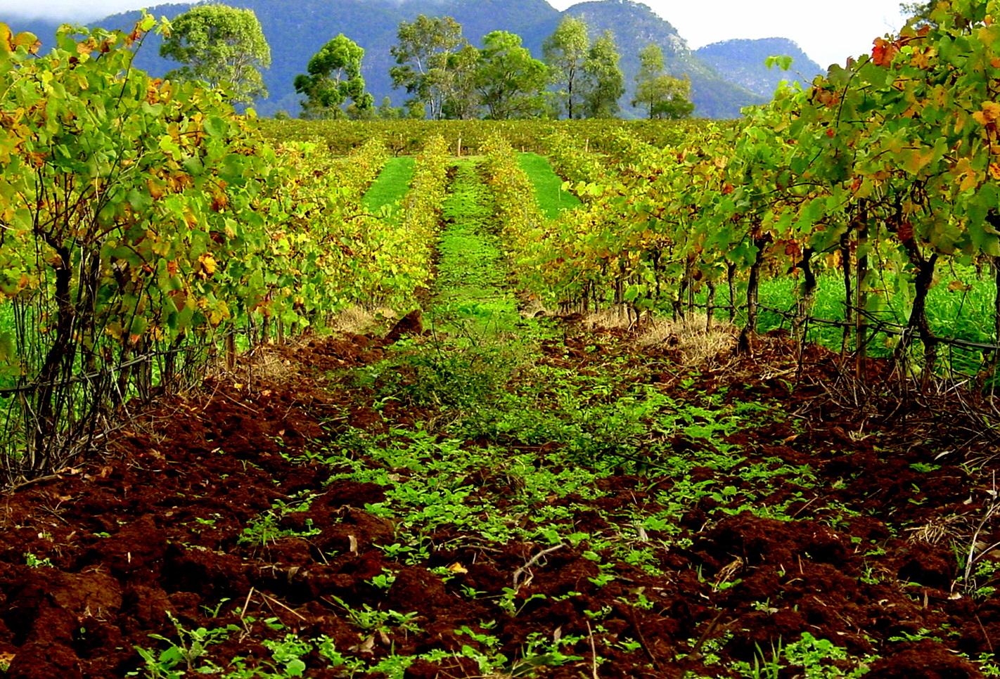
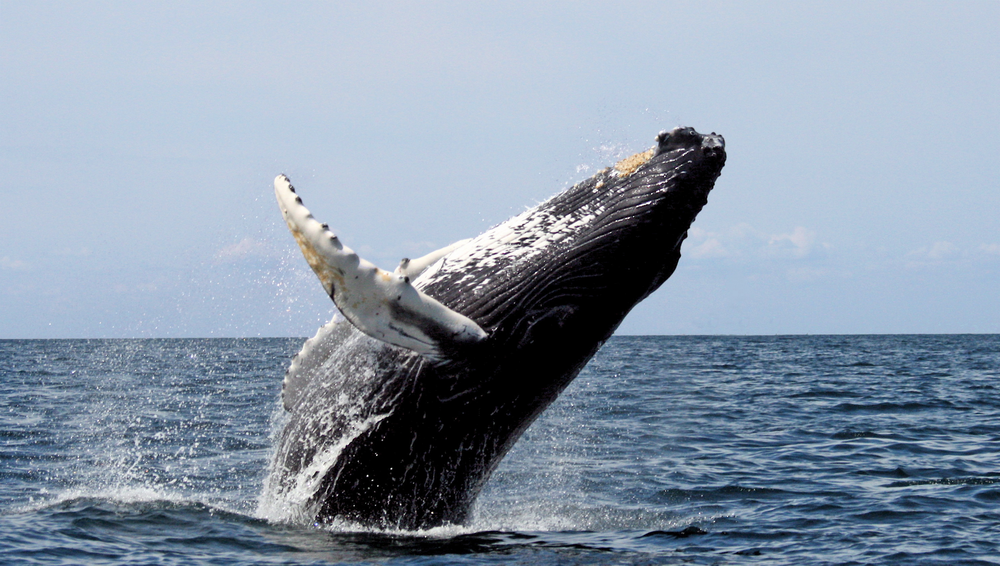
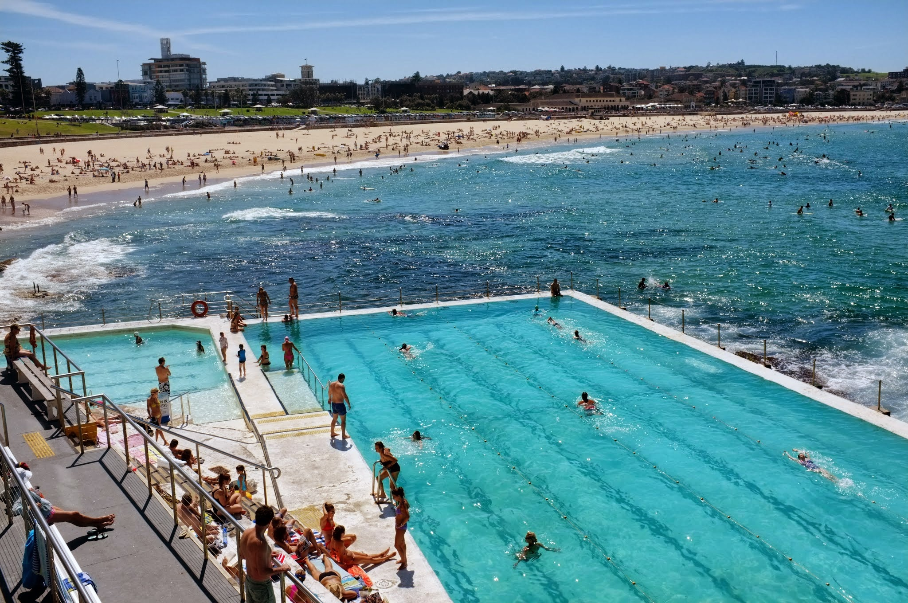
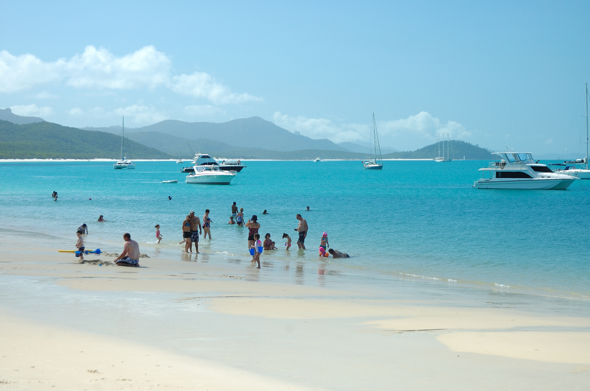
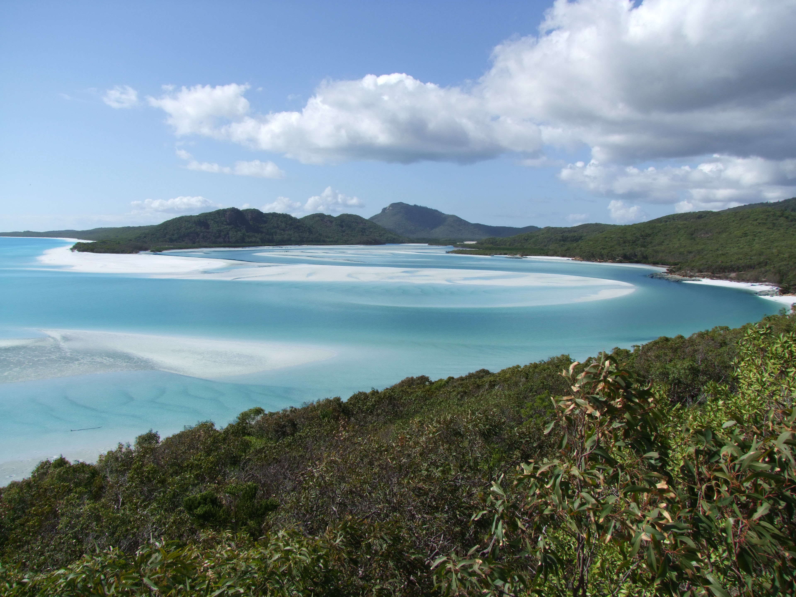
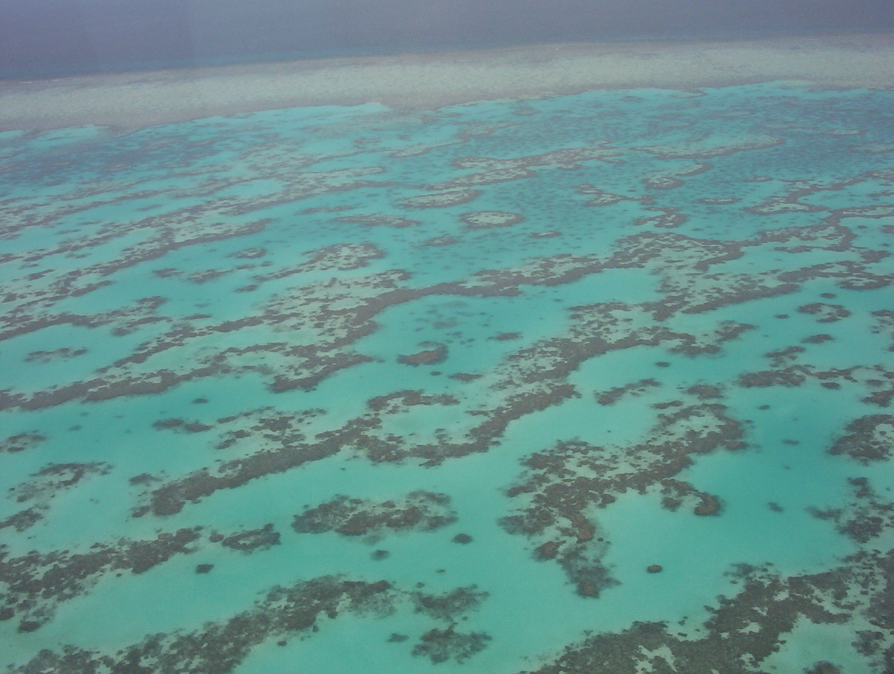
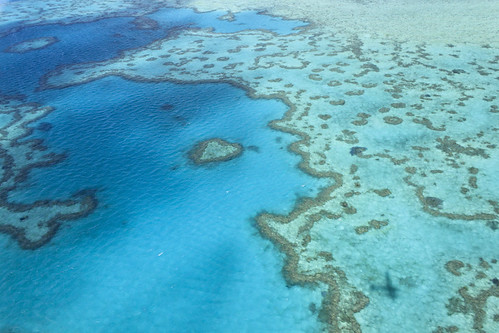

🎯 行程设计理念
以自然风光为主，城市只做点缀。悉尼半天速览城市地标，其余时间全部留给：
🍷 猎人谷 — 澳洲最古老葡萄酒产区，葡萄园+丘陵+野生袋鼠
🐋 观鲸 — 9月底座头鲸南迁尾峰，80%+概率
🏖️ 悉尼海岸线 — Bondi到Coogee的悬崖步道
🏝️ 白天堂海滩 — 全球前十最美沙滩，98%纯白硅砂
🤿 大堡礁外礁 — 潜入世界最大珊瑚礁系统
🛩️ 心形礁+群岛全景 — 60分钟空中俯瞰大堡礁
沿途偶遇的考拉、袋鼠、海龟和鲸鱼，是自然风光之外的加分项，不是主线。
🗺️ 路线总览
🏙️ SYDNEY （3晚）
Day1 到达 Day2 🍷猎人谷 Day3 🐋观鲸
🏠 Waterloo公寓
🏝️ 圣灵群岛 WHITSUNDAYS （4晚）
Day4 ✈️抵达 Day5 🏖️白天堂 Day6 🤿大堡礁 Day7 🛩️心形礁
🏨 Airlie Beach 3BR公寓
🌿 自然风光亮点
| 地点 | 风光类型 | 级别 |
|---|---|---|
| 🍷 猎人谷 Hunter Valley | 葡萄园丘陵 + 酒庄庄园 + 野生袋鼠群 + 奶酪工坊 | ⭐⭐⭐ |
| 🐋 悉尼外海观鲸 | 9月底座头鲸南迁尾峰，喷水+尾鳍+跃身击浪 | ⭐⭐⭐⭐ |
| 🏖️ Bondi→Coogee海岸步道 | 6km悬崖步道，砂岩峭壁+碧蓝海湾连绵不绝 | ⭐⭐⭐ |
| 🏝️ 白天堂海滩+Hill Inlet | 全球前十沙滩，98%纯白硅砂+蓝绿漩涡潮汐 | ⭐⭐⭐⭐⭐ |
| 🤿 大堡礁Hardy Reef | 世界最大珊瑚礁系统，珊瑚墙+澄澈热带海水 | ⭐⭐⭐⭐⭐ |
| 🛩️ 心形礁+群岛空中俯瞰 | 60分钟鸟瞰74座岛屿+珊瑚礁群+心形礁 | ⭐⭐⭐⭐⭐ |
| 🌿 Conway国家公园 | 热带雨林步道，俯瞰Whitsunday群岛全景 | ⭐⭐ |
🐋 9月底是座头鲸南迁尾峰，出海观鲸有80%+概率看到。猎人谷葡萄园里野生袋鼠傍晚出来吃草。大堡礁海龟/礁鲨/苏眉鱼几乎必见。
📅 逐日详细行程
Day 1
9月26日（周六）
到达 + 悉尼速览 🏛️
城市部分只留半天，够看完歌剧院+海港大桥+岩石区就行。
🛬 入境 & 入住
✈️ 杭州萧山 ──MF801──▶ 悉尼 09:20
════════════════════════════════
🚆 机场→Green Square站 (T8线, 10分钟, A$20)
🏠 入住 8 Lachlan St, Waterloo
🚿 洗澡换衣服，12:00出发
🚶 下午：CBD步行路线（4小时精华版）
Circular Quay ────▶ 歌剧院 ────▶ 皇家植物园
│ 📸5min │ 🚶15min
│ ▼
│ 麦考利夫人椅
│ (歌剧院+大桥同框)
│ │
▼ ▼ (原路返回)
🍽️ Opera Bar The Rocks 岩石区
(一杯酒看海港) ◀──── 🚶10min
│ │
▼ ▼
海港大桥底下拍照 🥧 Harry's Cafe de Wheels
(1945年老店肉派)
| 时间 | 活动 | 备注 |
|---|---|---|
| 12:00 | 🚆 Green Square→Circular Quay | T8线，10分钟 |
| 12:30 | 🥢 午餐：Opera Bar 或 Gateway美食广场 | 边看歌剧院边吃 |
| 13:15 | 🏛️ 歌剧院 外观拍照 | 不进去也行，外面拍照就够了 |
| 13:30 | 🌿 皇家植物园 → 麦考利夫人椅 | 15分钟步行，拍经典同框照 |
| 14:15 | 🛍️ 岩石区 The Rocks | 历史街区，逛逛小巷 |
| 15:30 | 🌉 海港大桥 | Pylon Lookout A$25（可选）或桥底拍照 |
| 16:30 | 🍻 休息 | The Glenmore Hotel 屋顶酒吧（180°海港景） |
| 17:00 | 🚌 回Waterloo休息 | 倒时差，为第二天猎人谷酒庄游储备体力 |
| 19:00 | 🍽️ 晚餐 | Waterloo附近或唐人街 |
💡 如果下午不想走太多，可以缩短为：歌剧院拍照 + 植物园 + Opera Bar，2小时搞定。

Day 2
9月27日（周日）
🍷 猎人谷品酒一日游
⭐ 澳洲最古老葡萄酒产区，150+酒庄，葡萄园+丘陵+野生袋鼠，松弛感拉满

🚗 自驾路线（6人推荐，灵活串酒庄）
Waterloo ──M1高速──▶ Hunter Valley ──▶ 酒庄1 ──▶ 酒庄2 ──▶ 奶酪工坊 ──▶ 酒庄3 ──▶ 返程
2h 游客中心 品酒 午餐 伴手礼 葡萄园日落 2h
| 时间 | 活动 | 详情 |
|---|---|---|
| 08:00 | 🚗 出发 | M1高速向北160km/2h，7座MPV（A$120-160/天）或2辆小车；路上经过 Hawkesbury River 河谷风光 |
| 10:00 | 🍷 第一站：大牌酒庄 | Tyrrell's 或 McGuigan，免费品酒；赛美蓉（Semillon）是猎人谷招牌白葡萄 |
| 11:30 | 🍷 第二站：精品小庄 | Krinklewood（法式田园风，有机认证）或 Audrey Wilkinson（山顶酒庄，360°葡萄园全景） |
| 12:30 | 🧀 午餐+奶酪 | Binnorie Dairy 奶酪工坊 或 Muse Restaurant（猎人谷唯一两帽餐厅，需预约） |
| 14:00 | 🍷 第三站：下午酒 | Brokenwood（猎人谷标杆酒庄）或 Scarborough（霞多丽专业户，花园品酒） |
| 15:30 | 🦘 猎人谷花园+袋鼠 | Hunter Valley Gardens（春季玫瑰+薰衣草，A$35）；葡萄园里野生袋鼠傍晚成群出没 |
| 16:30 | 🍫 伴手礼 | Hunter Valley Chocolate Company 或 Pokolbin Jam Factory |
| 17:00 | 🚗 返程 | M1回悉尼，2h |
| 19:00 | 🍽️ 晚餐 | Waterloo附近 |
🍷 品酒小贴士：大部分酒庄免费品酒（买酒就免），收费酒庄 A$5-10 可抵酒款。6人选一名司机不喝酒（或轮流）。猎人谷产区的白葡萄酒（Semillon / Chardonnay）和西拉（Shiraz）世界顶级，带两瓶回去绝对不亏。
🚌 备选：跟团一日游（不留司机，全员畅饮）
| 公司 | 价格 | 特色 |
|---|---|---|
| Hunter Valley Wine Tasting Tours | A$130-160/人 | 悉尼CBD接送，3-4酒庄+午餐，小团12人 |
| Zepher Tours | A$150-190/人 | 含2帽餐厅午餐，4家精品酒庄，含奶酪/巧克力 |
💡 6人选跟团：不用留司机，所有人畅饮。人均A$130-190，比租车+油钱贵不了太多。自驾：路线自由，想在哪待多久就待多久。
Day 3
9月28日（周一）
🐋 观鲸 + 🏖️ Bondi海岸徒步
⭐ 9月底座头鲸南迁尾峰！早上出海追鲸，下午漫步澳洲最美城市海岸

🐋 上午：观鲸巡航
| 时间 | 活动 | 详情 |
|---|---|---|
| 08:00 | 🚆 Waterloo→Circular Quay | T8线，10分钟 |
| 08:30 | ☕ 环形码头早餐 | City Extra 24小时，海边早餐 |
| 09:00 | 🐋 观鲸船出发！ | Go Whale Watching Sydney 或 Captain Cook Cruises；2-3小时，A$69-99/人；80%+概率看到座头鲸 |
| 12:00 | 返回 Circular Quay |

🐋 观鲸最佳季：5-11月座头鲸迁徙途经悉尼海岸线，9月底南迁尾峰。坐上层甲板视野好。晕船的提前吃晕船药。
🏖️ 下午：Bondi→Coogee海岸步道
| 时间 | 活动 | 详情 |
|---|---|---|
| 12:30 | 🍽️ 午餐 | Circular Quay 附近解决 |
| 13:30 | 🚌 去 Bondi | 公交 333 直达 Bondi Beach，25分钟，A$3.5 |
| 14:00 | 🏊 Icebergs Pool 冰山泳池（可选） | A$10，海水泳池嵌在悬崖边 |
| 14:30 | ☕ Bondi 下午茶 | Speedos Cafe 或 Porch & Parlour |
| 15:00 | 🚶 Bondi→Coogee海岸步道 | 6公里，约2小时：Tamarama(15min)→Bronte(30min)→Clovelly(40min)→Coogee(35min) |
| 17:00 | 🍻 Coogee Pavilion | 三层海景餐厅喝一杯，A$30-40 |
| 18:30 | 🚌 返回 Waterloo | 公交 373 |
💡 如果观鲸后感觉累了，下午可压缩为只看 Bondi + Icebergs Pool，不走完整 6km 步道。

Day 4
9月29日（周二）
✈️ 悉尼飞圣灵群岛 → 艾尔利滩

🏠 Waterloo ──▶ 悉尼机场T2 ──✈️──▶ Proserpine (PPP) ──🚌──▶ Airlie Beach
10min Jetstar 2.5h Shuttle 30min
| 时间 | 活动 | 详情 |
|---|---|---|
| 07:00 | 🏠 退房+出发 | 🚆 Green Square→Domestic Airport (T8, 10分钟) |
| 08:30 | 🛂 值机 | Jetstar SYD→PPP（提前1小时到即可，国内航班）；⚠️ Jetstar无免费行李托运，提前网上买A$25/20kg |
| 09:30 | ✈️ 悉尼→Proserpine | 约2.5小时，俯瞰大堡礁！坐左边窗户 |
| 12:00 | 🛬 抵达PPP | Whitsunday Coast Airport |
| 12:15 | 🚌 接驳车去Airlie | 6人建议私人包车接送（A$30-40/人），30分钟直达 |
| 12:45 | 🏨 入住 | 3BR公寓：The Boathouse 或 The Sebel Whitsundays |
| 13:30 | 🍽️ 午餐 | Airlie Beach Main Street，推荐：The Deck（海景） |
| 15:00 | 🏊 Airlie Beach Lagoon | 免费公共海景泳池！出海前的完美下午 |
| 16:30 | 🚶 Bicentennial Walk | 海滨步道4km往返，经过Coral Sea Marina，看游艇+海岛风光 |
| 17:00 | ⛵ 落日帆船（可选） | 2小时黄昏帆船，A$69-89，含香槟+小吃 |
| 19:00 | 🍽️ 晚餐 | Fish D'vine（海鲜+著名朗姆酒吧）或 La Tabella（意餐） |
Day 5
9月30日（周三）
🏖️ 白天堂海滩 + Hill Inlet 🔥
⭐ 全球十大最美沙滩 + 希尔湾漩涡沙洲

🚤 推荐：Ocean Rafting 快艇一日游
| 公司 | Ocean Rafting |
| 价格 | A$199-249/人 |
| 船型 | 半刚性充气快艇（快+刺激），最多32人 |
| 时长 | 7-8小时 |
| 包含 | 白天堂海滩+Hill Inlet观景台+国家公园导览+浮潜装备+午餐 |
| 预订 | oceanrafting.com.au 提前2周+ |
【路线】Airlie Beach ──🛥️1h──▶ Hill Inlet Lookout
│
▼ Whitehaven Beach (2h自由)
│
▼ Hook Island / Border Island (浮潜1h)
│
▼ 🛥️返程 → Airlie Beach (~17:00)
🚤 备选：Camira Sailing 帆船一日游
Ocean Rafting
A$199-249 | 快艇刺激 | 32人 | 约8小时 | 海滩约2h
Camira Sailing
A$235-285 | 帆船悠闲 | 60-72人 | 约10小时 | 🍷啤酒红酒畅饮+BBQ
⏰ 当日时间线
| 时间 | 活动 |
|---|---|
| 08:00 | 码头集合 |
| 09:00 | 出发！快艇冲浪穿越Whitsunday Passage |
| 10:00 | 到达Whitsunday Island → 徒步上Hill Inlet Lookout — 📸此行最出片的点！ |
| 11:30 | 白天堂海滩2小时自由 🏊游泳 · 🏖️躺沙滩 · 📸拍照 |
| 13:30 | 船上午餐 |
| 14:00 | 前往浮潜点 🤿 珊瑚+五彩热带鱼+可能看到海龟！ |
| 15:30 | 返程，一路看鲸鱼！（9月底座头鲸南迁尾峰） |
| 17:00 | 回到Airlie Beach |
| 19:00 | 🍻 晚餐：Northerlies Beach Bar（海景落日酒吧） |

Day 6
10月1日（周四）
🤿 大堡礁外礁 · Hardy Reef 潜水日 🔥🔥🔥
⭐ 这一天是整个行程的重头戏！真正的Great Barrier Reef外礁！

🛥️ Cruise Whitsundays 大堡礁全日游
| 公司 | Cruise Whitsundays |
| 价格 | A$319/人（日游，不含潜水） |
| 船型 | 大型双体船，稳定舒适 |
| 时长 | 约10小时（4小时在浮台） |
| 包含 | 往返船票+浮潜装备+防刺服+半潜船+水下观景台+午餐+下午茶 |
| 预订 | cruisewhitsundays.com 提前2-3周+ |
🤿 潜水选项（全队无证，推荐体验潜水）
⭐ 体验潜水 Discover Scuba
~A$150-180/人 | 教练一对一 | 5-12米深 | 无需证照
珊瑚墙+大鱼群+海龟+礁鲨
浮潜 Snorkeling
免费（已含）| 无限次 | 水面看珊瑚顶+浅水鱼+海龟
不会游泳也行，有浮力衣
🤿 6人都没有潜水证，推荐都报 Discover Scuba Diving。教练 1 对 1 带下水，先在浮台旁浅水区适应呼吸，不适应也可随时改浮潜。Hardy Reef 珊瑚覆盖率极高，海龟/小丑鱼/苏眉鱼/礁鲨几乎必见。9-10月水温约 22-24°C。
⏰ 当日时间线
| 时间 | 活动 |
|---|---|
| 07:00 | 码头集合 |
| 08:00 | 🛥️ 出发！2小时航程，途中可能看到座头鲸🐋 |
| 10:00 | 到达Hardy Reef浮台 → 安全简报 → 分派教练 |
| 10:30 | 🤿 体验潜水（教练1对1，先浅水适应）；不深潜的人去浮潜区 |
| 12:00 | 🍽️ 午餐（自助） |
| 13:00 | 🤿 继续深潜/浮潜，或坐半潜船/水下观景台 |
| 14:00 | 🐠 最后浮潜，交换体验心得 |
| 15:00 | 🛥️ 返程，甲板上晒太阳看海 |
| 17:00 | 回到Airlie Beach |
| 19:00 | 🍽️ 晚餐：La Marina（意大利海鲜面） |
【Hardy Reef潜点示意图】
┌─────────────────────┐
│ Reefworld 浮台 │
│ ┌──🍽️──🚻──🤿──┐ │
│ │ │ │
│ │ 浮潜区域 │ │
│ │ 🐢🐠🦈 │ │
│ │ │ │
│ └─────────────────┘ │
│ │ │
│ 珊瑚墙 (深潜区) │
│ ↓ 5-12米深 │
│ 巨型珊瑚+大鱼群 │
└─────────────────────┘
Day 7
10月2日（周五）
🛩️ 心形礁观光飞机 + 最后海边时光
⭐ 从空中俯瞰心形礁+白天堂海滩，另一维度感受大堡礁！

🛩️ 60分钟观光飞机
| 公司 | Air Whitsunday / GSL Aviation |
| 价格 | A$315-349/人 |
| 机型 | 固定翼飞机（13人，人人靠窗） |
| 时长 | 60分钟 |
| 路线 | Airlie Beach → 白天堂海滩(鸟瞰) → Hill Inlet(漩涡沙洲) → 心形礁💙 → Hardy Reef → Hook Island → 返回 |
| 预订 | 提前1-2周，选最早7:00或8:30班次（上午光线最好） |
💡 心形礁只能从空中看！坐船到不了。60分钟飞机是圣灵群岛必做之事。

⏰ 当日时间线
| 时间 | 活动 |
|---|---|
| 07:00 | 🛩️ 酒店接送去小机场（Whitsunday Airport） |
| 07:30 | 🛩️ 起飞！60分钟大堡礁空中之旅 — 📸 每个窗口疯狂拍 |
| 08:30 | 降落，送回酒店 |
| 09:00 | ☕ Airlie Beach早餐：The Fat Frog（海边Brunch） |
| 10:30 | 下午自由选项（三选一）↓ |
| 选项 | 详情 | 费用 |
|---|---|---|
| 🌿 Conway国家公园徒步 | Honeyeater Lookout (3.6km往返)，俯瞰Whitsunday群岛全景 | 免费 |
| 🏖️ Cedar Creek Falls | 天然瀑布水潭，可以游泳，距Airlie 20分钟车程 | 免费 |
| 🛍️ Airlie Beach闲逛+泻湖 | 海边小店、Lagoon游泳 | 免费 |
19:00 🍽️ 晚餐：Anchor Bar（港口落日+鸡尾酒+生蚝A$2/只happy hour）
Day 8
10月3日（周六）
上午自由 + ✈️ 飞回悉尼
| 时间 | 活动 | 详情 |
|---|---|---|
| 08:00 | 🏖️ 最后的Lagoon时光 | 沙滩散步+游泳+海边早餐 |
| 10:00 | 🏨 退房 | |
| 10:30 | 🚌 接驳车去PPP机场 | 私人包车同去，提前约好回程时间 |
| 13:50 | ✈️ PPP→悉尼 JQ841 | 约2h40m，到达悉尼16:30 |
| 16:40 | 🚆 机场→Waterloo | T8线，10分钟 |
| 17:15 | 🏠 入住 | |
| 19:00 | 🍽️ 告别晚餐 | 唐人街大餐 或 Bodhi（植物园旁户外饮茶） |
💡 上午可在Airlie多玩一会：Cedar Creek Falls（天然瀑布水潭）或 Conway NP 快速徒步，赶在10:30前回来。
Day 9
10月4日（周日）
返程 ✈️
| 时间 | 活动 |
|---|---|
| 08:30 | 🏠 退房 |
| 09:00 | 🚆 Waterloo→悉尼T1国际 (T8线, 10分钟) |
| 10:00 | 🛂 值机+安检+退税(如有) |
| 10:30 | 🛍️ 免税店：TimTam/坚果/葡萄酒/保健品 |
| 12:25 | ✈️ 悉尼→杭州 MF802/MF8595 🏠 |
🏨 住宿汇总（6人：3男3女）
🏙️ 悉尼（9/26-29 三晚 + 10/3 一晚）
| 方案 | 详情 | 价格/晚 |
|---|---|---|
| 🏠 现有Waterloo公寓 | 已定，位置好 | 已定 |
| ⭐ Meriton Suites 2BR | 步行3分钟到现有公寓 | A$350-450 |
| Meriton Suites 3BR | 175m²，3张大床(可拆双床) | A$500-700 |
💡 推荐：保留现有公寓（2-4人住） + 旁边 Meriton 订一间 2BR（2-4人住），步行3分钟会合。
🏝️ Airlie Beach（9/29-10/3 四晚）
| 选项 | 房型 | 价格/晚 |
|---|---|---|
| ⭐ The Boathouse | 3BR/2BA，6-7人 | A$300-400 |
| ⭐ The Sebel Whitsundays | 3BR/3BA 海景 | A$400-550 |
| At Marina Shores | 3BR/2BA，200m² | A$350-450 |
| Toscana Village Resort | 3BR，6人 | A$280-380 |
💡 首推 The Boathouse（性价比最高）或 The Sebel（翻新好）。6人合住3BR比订3间酒店房更划算。
✈️ 航班汇总
| 航段 | 推荐航班 | 时间 | 预估价格 |
|---|---|---|---|
| 杭州→悉尼 | MF801 (已购) | 9/25 18:45→9/26 09:20 | 已购 |
| 悉尼→PPP | Jetstar (每天1-2班) | 9/29 约09:00-11:00出发 | A$130-200 |
| PPP→悉尼 | Jetstar JQ841 | 10/3 13:50→16:30 | A$130-200 |
| 悉尼→杭州 | MF802 (已购) | 10/4 12:25 | 已购 |
💡 Jetstar SYD-PPP是唯一的直飞选择，提前1-2月订，A$130-200是正常价。
🤿 体验潜水 vs 浮潜对照表
| Hardy Reef 浮潜 | Hardy Reef 体验潜水 | |
|---|---|---|
| 价格 | 免费（含在日游里） | A$150-180/次 |
| 深度 | 水面0-5m | 5-12m |
| 需要证照 | ❌ 不需要 | ❌ 不需要！教练1对1带 |
| 能看到什么 | 珊瑚顶+浅水鱼+海龟 | 珊瑚墙+大鱼群+礁鲨+海鳗 |
| 体验感受 | ★★★ | ★★★★★ |
| 适合谁 | 不想深潜的队员 | 想体验水下呼吸的队员！ |
💡 6人都没有潜水证，建议全员报 Discover Scuba Diving。教练一对一，在浮台旁浅水区先适应呼吸再去看珊瑚墙。不同队员可根据舒适度选择深潜或浮潜，团队不强制统一。
💰 预算明细（每人，AUD · 6人团）
| 类别 | 项目 | 人均预估 | 说明 |
|---|---|---|---|
| 🏨 住宿 | 悉尼额外住宿 4晚 | 200-300 | Meriton 2BR分摊 |
| Airlie Beach 3BR公寓 4晚 | 200-300 | The Boathouse ÷ 6人 | |
| ✈️ 国内机票 | SYD-PPP + PPP-SYD | 260-400 | 早点订 |
| 🚗 猎人谷租车 | 7座MPV 1天 | 25-35 | A$150-200/天 ÷ 6人 |
| 🐋 观鲸 | 2-3小时观鲸船 | 69-99 | 9月底尾峰 |
| 🍷 猎人谷品酒 | 大部分免费 | 0-30 | 买酒可抵品酒费 |
| 🎫 景点 | Icebergs Pool (Bondi) | 10 | |
| 🏖️ Day Trip | Ocean Rafting (白天堂) | 199-249 | |
| 🤿 Day Trip | Cruise Whitsundays (外礁) | 319 | |
| + 体验潜水 (1次) | 150-180 | ||
| 🛩️ | 心形礁观光飞机 | 315-349 | 13座飞机，务必早订 |
| 🚌 交通 | PPP机场接驳×2 | 30-40 | 6人包车更划算 |
| 悉尼Opal | 40-60 | ||
| 🍽️ 餐饮 | 9天 | 500-750 | |
| 合计 | 约 A$2,340-3,100 | ||
💡 6人团摊薄了租车和住宿成本。Jetstar 机票和观光飞机要尽早订——6个同航班座位和半架飞机的位子不会等人。
⚠️ 现在就该预订的清单
🔴 立刻
- 急 ✈️ Jetstar SYD↔PPP往返机票 ×6人（9/29出发，10/3返回）
- 急 🏨 悉尼额外住宿：Meriton Suites Waterloo 2BR（补充现有公寓）
- 急 🏨 Airlie Beach 3BR公寓 4晚（首推The Boathouse或The Sebel）
- 急 🛥️ Cruise Whitsundays 外礁全日游 ×6人（Day 6，提前2-3周）
- 急 🛩️ 心形礁观光飞机 ×6人（Day 7早上，13座飞机占半架！）
- 急 🏖️ Ocean Rafting 白天堂海滩游 ×6人（Day 5，提前2周）
🟡 出发前2周
- 🚗 猎人谷租车：7座MPV（Kia Carnival或同级），VroomVroomVroom比价；或报跟团一日游A$130-190/人
- 🐋 观鲸船票 ×6人（Day 3早上，Go Whale Watching Sydney / Captain Cook）
- 🧊 Icebergs Pool Bondi（不用预约，到场买票即可）
- 🚌 PPP机场接送：6人建议包车/私人接驳
- 🤿 买潜水保险 ×6人（DAN或PADI，体验潜水也建议保）
- 📱 下载离线地图：猎人谷 / Airlie Beach / Whitsunday Islands
- 🍽️ 热门餐厅提前订位：Mr Wong's、Opera Bar、Coogee Pavilion 等（6人桌紧张）
🟢 出行当天
- 浮潜面镜+呼吸管（如自备更合脸型，船上也提供）
- 高倍数防水防晒霜（注意珊瑚友好reef-safe）
- 防水手机套
- 晕船药（去外礁2小时船程）
🌿 国家公园与自然守则
🐨 考拉
✅ 轻轻抚摸背部（Featherdale）
❌ 不能抱！NSW州法律禁止
🦘 袋鼠
✅ 喂食专用饲料、轻轻抚摸
❌ 不要摸头/脸部、不要追
🐋 鲸鱼
✅ 从船上远观（保持100m距离）
❌ 不能靠近/触碰
🐢 海龟
✅ 保持3m距离浮潜观看
❌ 不能触碰/追逐/挡住上浮
🐠 珊瑚
✅ 浮潜时观看
❌ 不能踩/碰/折断